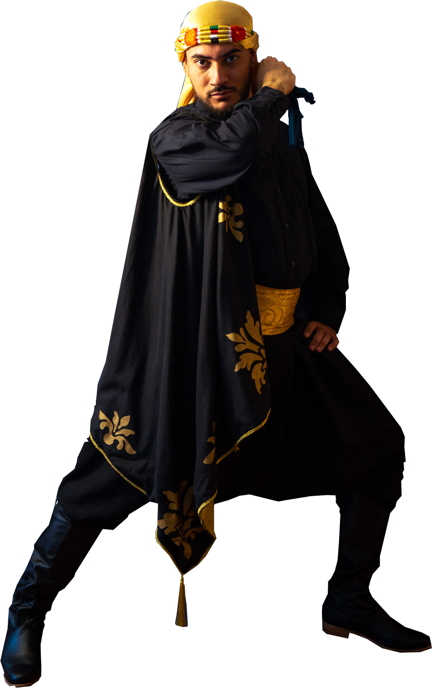
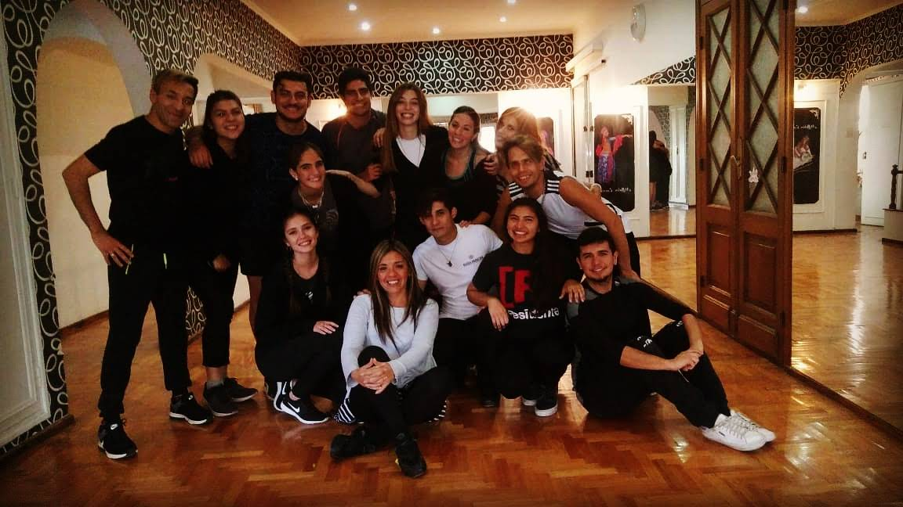
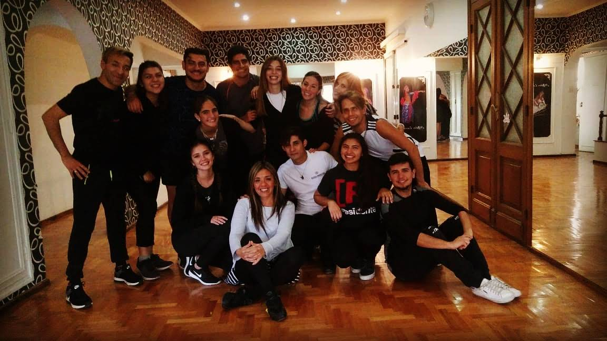
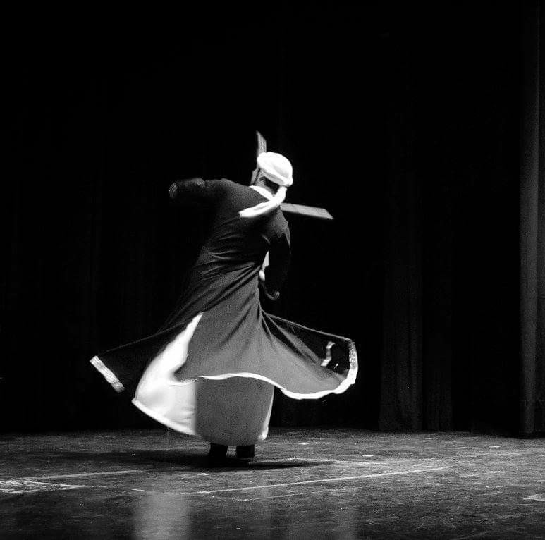
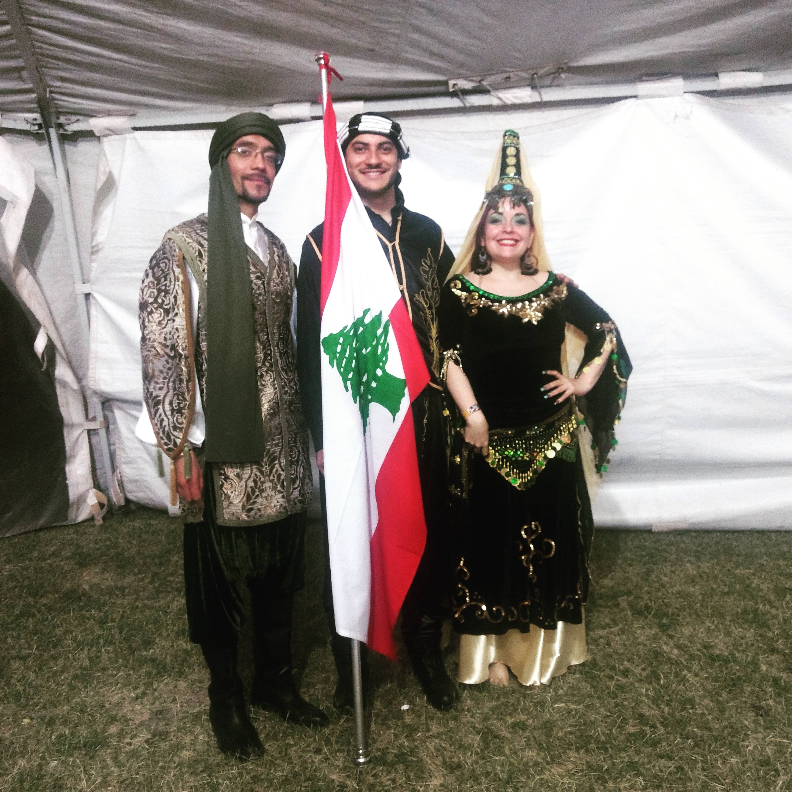
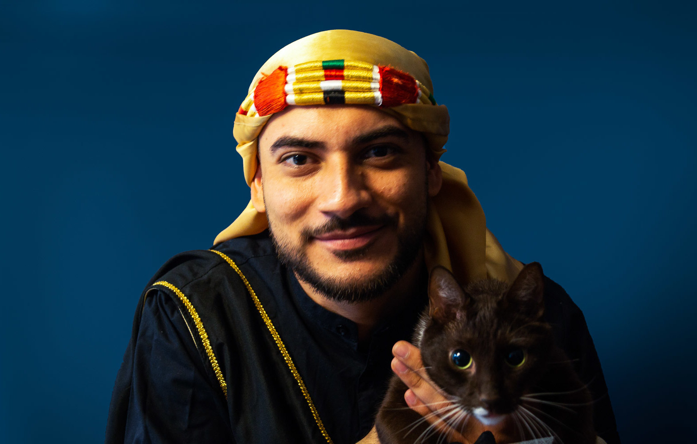

Sobre mí
Nací en Mendoza, Argentina, crecí en una familia que siempre estuvo interesada en la cultura de Medio Oriente, el mejor recuerdo que tengo es el de mi hermana bailando música árabe, con los rayos del sol entrando por la ventana resaltando las figuras uniformes que dejaba el humo del incienso que mi mamá siempre quemaba.
 

En el 2012 con 17 años de edad comencé a bailar en el Ballet "Shams Lubnan" dirigido por Belen Carrizo en la provincia de Mendoza. Es un ballet que realiza bellydance y tambien danzas árabes tradicionales y folclóricas (las ultimas fueron las que despertaron mi curiosidad y pasion por el folclore árabe). Aqui es donde siempre digo que "nací como bailarín" ya que no podía dar un paso sin ser un muñeco de madera pero con práctica sumando la confianza y cariño de mi profesora, pude lograr una gran evolución (incluso eliminar gran parte de mi timidez). Shams Lubnan mas que un grupo de danza es una familia.

Con el correr del tiempo la danza me brindó muchos amigos y gente muy querida, tambien experiencias inolvidables. Participé en obras de teatro en las que podía bailar y tambien aprovechar mi materia pendiente: actuar.

En 2016 conocí a un gran maestro quien luego pasó a ser uno de mis mejores amigos: Farid Yamin. En 2017 comencé sus clases de dabke y formé parte del Ballet Al Qwwa. Participamos de eventos culturales, fiestas de colectividades, muestras de danza y desfiles en representación a la colectividad libanesa.

En 2019 comencé el Profesorado de danzas árabes tradicionales y folclóricas dirigido por Hanaan Murad, en conjunto con Farid Yamin y Mauricio Achem. Fueron 3 excelentes y enriquecedores años de conocimiento cultural y dancistico.

Hoy en día me encuentro lejos de mi Mendoza querida, viviendo en Uruguay. Conociendo y aprendiendo cada dia las costumbres y cultura de éste hermoso país. Me hice de varios amigos y maravillosas personas gracias a la danza. También comencé a dictar mis primeras clases.